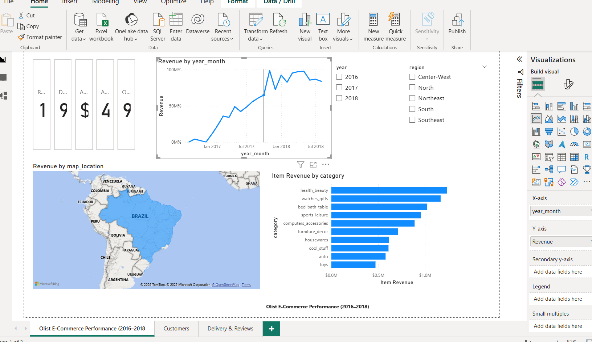
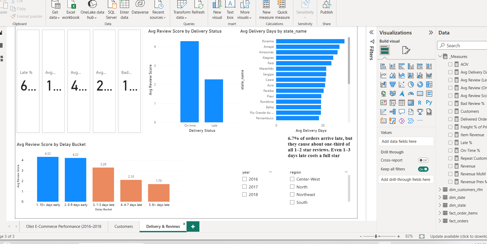
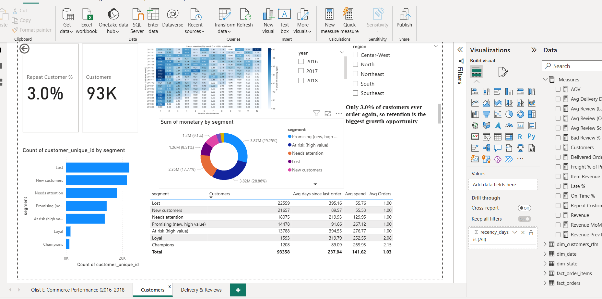

Data Analyst Portfolio Project
An end-to-end analysis of 99,441 real orders from Olist, a Brazilian online marketplace (2016–2018), covering sales, customers and delivery performance.
Delivered orders only. Revenue is product value excluding freight, in Brazilian reais.
What the data says, and why it matters for the business.
Only 6.7% of orders arrived late, but they produced about 32% of all 1–2 star reviews. Late orders averaged 2.27 stars vs 4.29 for on-time orders, and 62% of them got a bad review. The difference is statistically significant (Mann-Whitney U, p < 0.001).
Scores fall steadily with delay: 4.22 on time, 3.29 at 1–3 days late, 2.10 at 4–7 days, and 1.70 at 8+ days late.
64% of orders arrived 10 or more days before the estimated date. Arriving very early scores about the same as arriving just on time (4.32 vs 4.22), so the extra padding earns little. Whether long estimates discourage purchases is a hypothesis worth testing.
Only 3.0% of customers placed a second order, and cohort retention stays below 1% in every month after the first purchase.
RFM segmentation shows two segments of single-purchase, high-spend customers ("Promising" and "At risk") make up 30% of customers but 58% of revenue. Converting them into repeat buyers is the largest growth lever.
The central result of the project.
| Delivery timing | Orders | Avg review |
|---|---|---|
| 10+ days early | 61,523 | 4.32 |
| 0–9 days early | 27,920 | 4.22 |
| 1–3 days late | 1,852 | 3.29 |
| 4–7 days late | 1,748 | 2.10 |
| 8+ days late | 2,781 | 1.70 |
Three pages: executive overview, customers, and delivery & reviews. Filterable by year and region.



Each tool had a specific job in the workflow.